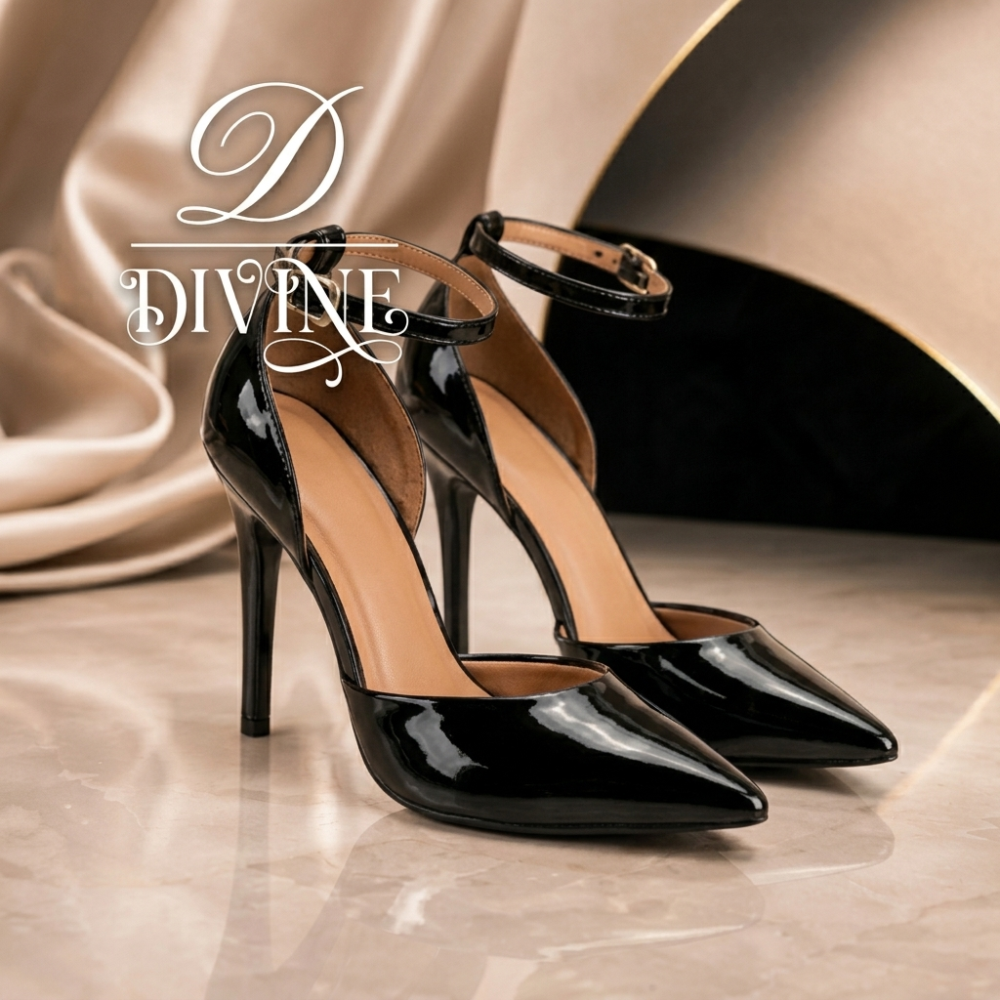

Stilettos Cuadrado
Zapato Stilettos DIVINE con taco cuadrado de 5 cm forrado en cuero legítimo.
Consultar StockDescubrí nuestros diseños exclusivos en cuero legítimo con detalles artesanales de autor.

Zapato Stilettos DIVINE con taco cuadrado de 5 cm forrado en cuero legítimo.
Consultar StockZapatos Mujer DIVINE Taco Sandalias Charol con base confort amortiguada 6210.
Consultar StockOpiniones reales de clientas que eligen la sofisticación y el confort de nuestras hormas.
"El calce es impecable. Tenía dudas con la altura del taco aguja, pero la horma distribuye el peso de manera perfecta. Son comodísimos para eventos largos."
"Hermosa terminación del cuero vacuno y el tono crema es súper combinable. Llegaron en 48 hs a Recoleta y la presentación de la caja es de puro lujo."
"La suavidad de la forrería interna marca la diferencia: cero rozaduras desde el primer uso. Además, el cambio bonificado me dio total tranquilidad al comprar online."